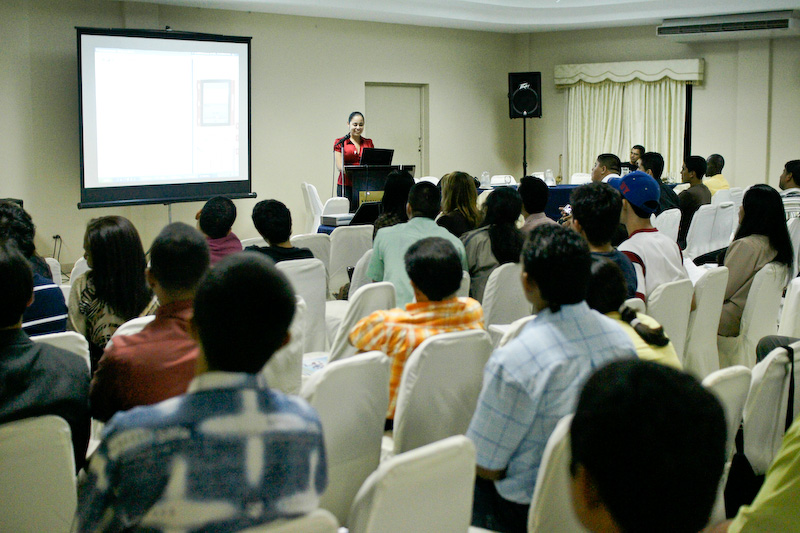
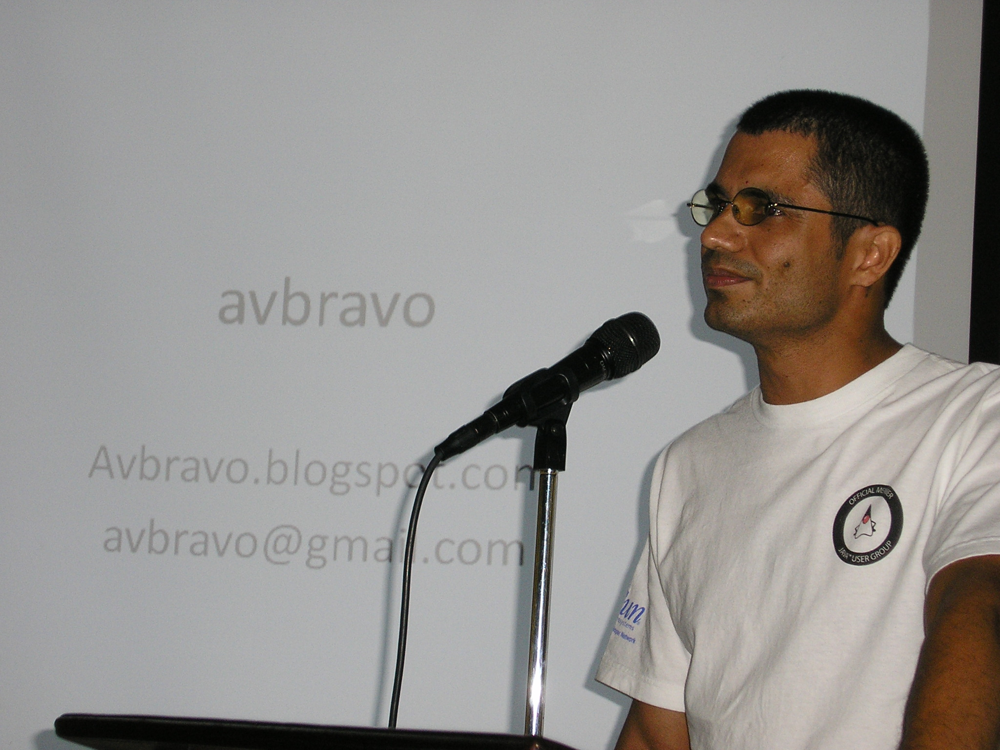

Show & Tell: NetBeans & Java at the PanamaJUG Congress
(February 2008)
When Fabiola Rios accepted an
invitation to give a presentation at the
first-ever PanamaJUG
Congress she was fully aware of the challenge ahead: “Panama is
mainly Microsoft territory, and programmers there develop
with Visual Basic, C and .Net.”
Encouraging Java and NetBeans adoption in rival territory was the goal
of the two-day conference which was organized by
PanamaJUG president and
NetBeans Dream Team member Aristides
Villarreal Bravo, and held in mid-December 2007.

Fabiola
Rios
Rios, a NetBeans Mobility software engineer, started her session with
an introduction to Java ME development, an overview of the growing
mobile applications market and the advantages of using development
tools
such as the NetBeans IDE's Mobility features to build slick
applications. But developers can be a tough bunch to sway just with
talk alone and she moved quickly into a demo.
“NetBeans is a new tool in Panama,” she said. “People still work from
scratch and I wanted to show them how easy it was to create a real
mobile application in a matter of minutes with the IDE.”

Aristides
Villarreal Bravo
To establish credibility with the audience, she
opted to use a borrowed
phone for the demo. She created a simple SMS application, deployed it
and sent a message to another phone. The audience was sold. There were
no empty seats at her
hands-on lab the following day.
Java enlightenment, one could say, begins with a bit of show-and-tell.
For Villarreal Bravo, a long-time Java developer and NetBeans
user, the
idea of the PanamaJUG Congress took root because he often encountered
students and developers who expressed frustration with learning Java or
professed ignorance about the NetBeans IDE.
“People thought that Java was difficult to learn, and that other visual
and fast development tools like those of Microsoft didn't exist.”
What was needed, he reasoned, was an opportunity to
showcase the benefits of Java as a programming language and the
NetBeans IDE as a tool for learning and for creating a wide range of
applications. He reached out to several Java specialists such as Rios
and her fellow NetBeans engineers Tomasz Slota and Rodrigo Andueza
Gallardo, and asked if they were interested in presenting at the
conference.
Rodrigo
Gallardo
The 80-plus attendees at the event turned out to be a fitting
microcosm of the trend that prompted Villarreal Bravo into action—many
had no prior
experience with the NetBeans IDE or were new to Java. Over the
course of the two-day conference, they participated in talks about Java
ME, JavaFX, web development and the NetBeans IDE. NetBeans
Globalization Manager Janice Campbell was also on hand to discuss
efforts to translate the IDE for Spanish-speaking developers. By the
end of the conference, most attendees wanted to know if a second event
was in the works.
Students who attended have formed new Java
groups on their campuses; a
number of companies are giving the NetBeans IDE a closer look for their
development needs, Villarreal Bravo said. He called the feedback
positive and encouraging, but not completely unexpected since companies
and universities in the wider Central American region are starting to
pay more attention to open source technologies.
“Universities want their students to learn Java with ease and to use
open source tools, and companies want high quality tools as well” he
said. “NetBeans is a simple-to-use and powerful open sourced IDE that
meets these needs.”
The growing appeal of open source technologies in many Latin American
countries is a pragmatic one and offers NetBeans an advantage.
“No [government or company] needs to fear that by using Java they will
make themselves dependent on some corporate entity because the source
is always there to do with whatever they want. This makes us, as a tool
for Java, more compelling.”
Boudreau's whirlwind tour which included stops on campuses in Brazil,
Argentina, Chile and Uruguay, sought to increase awareness of Java,
NetBeans and other open source technologies among the next wave of
developers. Like the PanamaJUG, the reception for the university tour
was enthusiastic, with faculties motivated to integrate Sun
technologies into their projects and students asking for tips about
creating user groups.
The interest in NetBeans and Java shows no signs of stopping as new
fans of
the IDE across the region undertake evangelism efforts
similar to those of Villarreal Bravo's PanamaJUG Congress.
The teaching assistant and Computer Science major at Rafael Belloso
Chacin University has been using the NetBeans IDE for a year and a
half, and says he has not been able to find a better IDE. His goal for
NetBeans Day is a clear one:
“I want to bring this awesome IDE to every developer out there.”